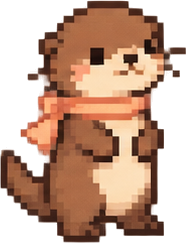
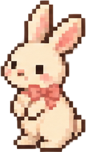

the big days. the ordinary days. all of it.
A little collection of us.
Our photos, our stories, and the little things we never want to forget.


you & methe big days. the ordinary days. all of it.
Our photos, our stories, and the little things we never want to forget.


you & me